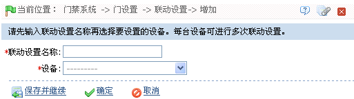
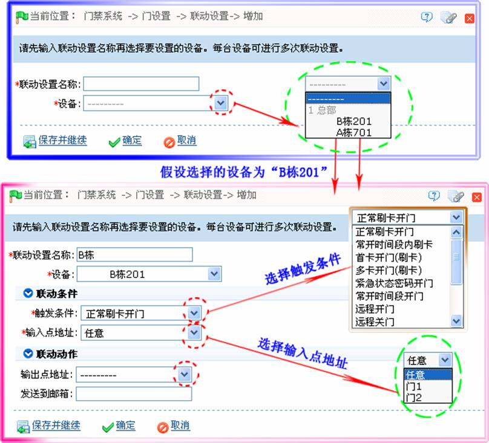

6.3.6 联动设置
联动设置，就是在门禁系统中的某个输入点触发某个特定事件后，即会在指定的输出点产生一个联动动作，用以控制系统中的验证、开门、报警、异常等事件，并在监控的相应事件列表中显示，以供用户查看。
新增联动设置：
1、点击【门禁】 【门设置】
【门设置】 【联动设置】
【联动设置】 【新增】，进入新增联动设置页面：
【新增】，进入新增联动设置页面：

2、输入联动设置名称（输入联动设置名称后才能选择设备），选择设备后，会出现相应的联动设置界面，如下图所示：

各参数设置方法如下：
触发条件：设置触发条件。请参考6.6 实时监控中的《实时事件描述》，其中除了触发联动事件、取消报警、开启辅助输出、关闭辅助输出、设备启动外，均可作为触发条件。
输入点地址：设置输入点地址。任意、门1、门2、门3、门4、辅助输入1、辅助输入2、辅助输入3、辅助输入4、辅助输入9、辅助输入10、辅助输入11、辅助输入12。（某个设备有哪些输入点请参考具体设备参数。）
输出点地址：设置输出点位置。门锁1、门锁2、门锁3、门锁4、辅助输出1、辅助输出2、辅助输出3、辅助输出4、辅助输出6、辅助输出8、辅助输出9、辅助输出10。（某个设备有哪些输出点请参考具体设备参数。）
设置输出点地址后，弹出动作类型设置项：
-
 动作类型：关闭、打开、常开，默认为关闭，如果打开，则需要设置延时时间，或者可以选择常闭。
动作类型：关闭、打开、常开，默认为关闭，如果打开，则需要设置延时时间，或者可以选择常闭。
动作类型选择为“打开”或“常开”时，弹出延时设置项：
-
 延时：范围：1-254s（此项在动作类型为打开时有效）；
延时：范围：1-254s（此项在动作类型为打开时有效）；
发送到邮箱：输入邮箱地址，触发联动事件后，会将该记录发送到指定邮箱。
例如：触发条件选择“正常刷卡开门”，输入点：门1，输出点：门锁1，动作类型：打开，延时范围：60s，那么，在门1有人“正常刷卡开门”后，在门锁1，则联动产生“打开”的动作，门打开维持时间60s。
（1）、编辑时不能修改设备，只能修改联动设置名称和配置项，当删除某个设备时，如果其存在联动设置记录，则会一并级联删除；
（2）、如果系统中已经设置过某个设备在某个触发条件下输入点为某个具体的门或者辅助输入点的设置信息，将不再允许用户添加（或者编辑）设备和触发条件相同，但是输入点为“任意”的联动设置记录；
（3）、如果设备和触发条件相同的条件下，系统中已存在触发点为“任意”的联动设置记录，则系统不再允许用户添加（或者编辑）输入点为某个具体的门或者辅助输入的联动设置记录；
（4）、系统中也不允许某个设备在在特定触发条件下存在输入点和输出点都相同的联动设置；
（5）、同一台设备允许进行多次符合逻辑（如上所述）的联动设置。